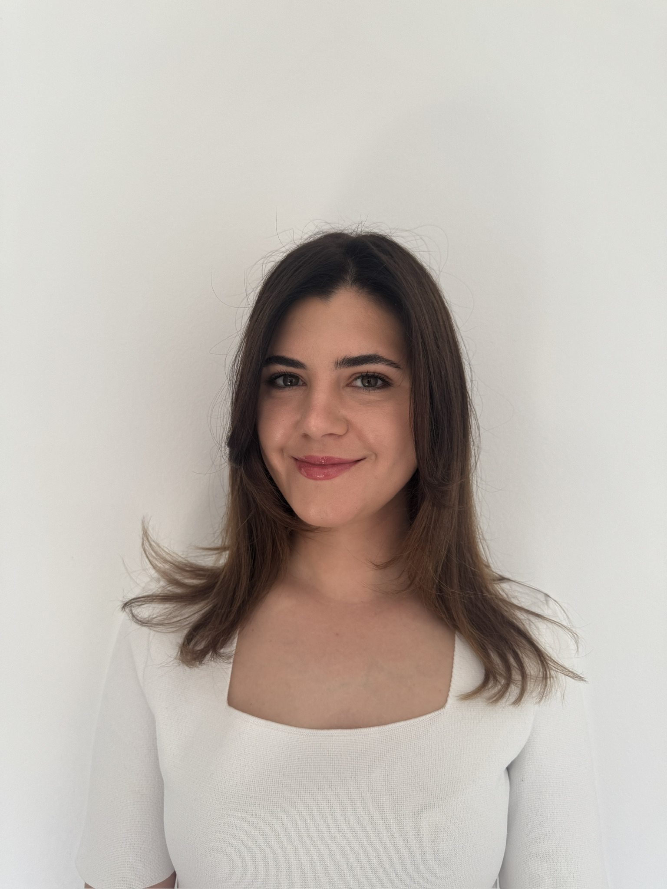

Piele.Știință.Încredere.

Medic specialist
dermatovenerologie.
Sunt medic specialist dermatovenerologie, cu formare în România, Germania și Franța.
Locații și programări01 / Consultații și servicii
Pielea,
în prim-plan.
Fiecare recomandare pornește de la consultație și de la evaluarea situației individuale.
Explorați toate serviciile8 categorii de servicii
pentru sănătatea pielii
Consultație dermatologică pentru adulți și copii
Dermatoscopie și evaluarea alunițelor
Afecțiunile părului și ale unghiilor
Infecții cu transmitere sexuală
Proceduri și chirurgie dermatologică
Dermatologie regenerativă și proceduri estetice minim invazive
Oncodermatologie și reacții cutanate asociate tratamentelor oncologice
Afecțiuni ale mucoasei ano-genitale
02 / Relația medic–pacient
„Un diagnostic nu ar trebui doar comunicat,
ci și explicat.”
03 / Locații și programări
Ne vedem
în cabinet.
Disponibilitatea consultațiilor și programările se confirmă direct la recepția clinicii.
04 / Înaintea consultației
Întrebări?
Răspunsuri.
Răspunsuri la întrebările pe care pacienții le adresează cel mai des înaintea unei consultații.
Toate întrebărileCât durează o consultație dermatologică?
O consultație dermatologică durează, în general, între 20 și 30 de minute. Durata poate varia în funcție de motivul prezentării, complexitatea evaluării și necesitatea unor examinări suplimentare.
Cum mă pregătesc pentru consultația dermatologică?
Pentru ca zona afectată să poată fi examinată corect, este recomandat să veniți cu pielea curată și fără machiaj pe zona care urmează să fie evaluată. Dacă motivul consultației îl reprezintă o problemă a unghiilor, îndepărtați în prealabil oja, lacul semipermanent sau alte produse aplicate pe unghii.
Dacă sunt disponibile, aduceți:
- documentele medicale recente și relevante, inclusiv cele primite în urma altor consultații sau spitalizări;
- rezultatele analizelor efectuate recent;
- lista medicamentelor și a suplimentelor utilizate în prezent.
În cazul copiilor, consultația se desfășoară cu participarea părintelui sau a reprezentantului legal.
Este necesară o consultație înaintea unei proceduri dermatologice?
Da. Înaintea unei proceduri este necesară evaluarea medicală a leziunii sau a problemei pentru care pacientul se prezintă. În cadrul consultației sunt stabilite indicația, tipul procedurii potrivite și eventualele contraindicații.
Pacientului îi sunt explicate scopul intervenției, alternativele disponibile, riscurile, limitele și recomandările pentru îngrijirea ulterioară. În funcție de procedură, de timpul disponibil și de organizarea clinicii, aceasta poate fi efectuată în aceeași zi sau programată separat.
Când este recomandată dermatoscopia?
Dermatoscopia poate fi recomandată pentru evaluarea nevilor (alunițelor) și a altor leziuni cutanate, mai ales dacă acestea au apărut recent, și-au modificat forma, dimensiunea sau culoarea ori prezintă simptome precum mâncărime, durere sau sângerare.
Examinarea poate fi indicată și în cadrul evaluării periodice a persoanelor cu numeroși nevi, antecedente personale sau familiale de cancer cutanat ori alți factori de risc. Frecvența controalelor se stabilește individual, în urma consultației dermatologice.
05 / Educație medicală
Mai multă
claritate.
Pregătesc materiale de educație medicală despre sănătatea pielii, a părului și a unghiilor. Fiecare material este documentat și verificat înainte de publicare.
Despre secțiunea de articoleProgramări
Programările se fac direct la clinică.
Alegeți clinica potrivită pentru dumneavoastră și contactați recepția pentru disponibilitate și programare.